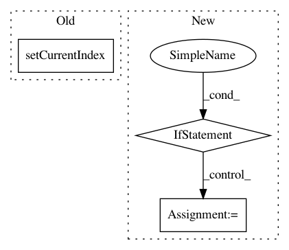

169b3bf064d5855d970a08ad1ac82c610764eea4,ilastik-shell/applets/dataSelection/dataSelectionGui.py,DataSelectionGui,updateStorageOptionComboBox,#DataSelectionGui#Any#Any#,251
Before Change
if self.mainOperator.Dataset[row].value.filePath[0] == "/":
combo.setCurrentIndex( LocationOptions.AbsolutePath )
else:
combo.setCurrentIndex( LocationOptions.RelativePath )
combo.currentIndexChanged.connect( partial(self.handleStorageOptionComboIndexChanged, combo) )
self.fileInfoTableWidget.setCellWidget( row, Column.Location, combo )
After Change
options[ LocationOptions.RelativePath ] = relPath
// Saving data to the project file is not an option in batch mode
if self.guiMode == GuiMode.Normal:
options[ LocationOptions.Project ] = "<project>"
for option, text in sorted(options.items()):
// Add to the combo, storing the option as the item data
combo.addItem(text, option)
In pattern: SUPERPATTERN
Frequency: 3
Non-data size: 3
Instances
Project Name: ilastik/ilastik
Commit Name: 169b3bf064d5855d970a08ad1ac82c610764eea4
Time: 2012-05-27
Author: bergs@janelia.hhmi.org
File Name: ilastik-shell/applets/dataSelection/dataSelectionGui.py
Class Name: DataSelectionGui
Method Name: updateStorageOptionComboBox
Project Name: biolab/orange3
Commit Name: 0f761449704287895fb6a47662f61f5f731ecc89
Time: 2017-03-02
Author: jerneju@gmail.com
File Name: Orange/widgets/utils/domaineditor.py
Class Name: VarTypeDelegate
Method Name: setEditorData
Project Name: ilastik/ilastik
Commit Name: 961b6d3ad986d3484e43e5fff04f90d3dd923317
Time: 2019-06-28
Author: tomaz.vieira@embl.de
File Name: ilastik/applets/dataSelection/datasetInfoEditorWidget.py
Class Name: DatasetInfoEditorWidget
Method Name: __init__